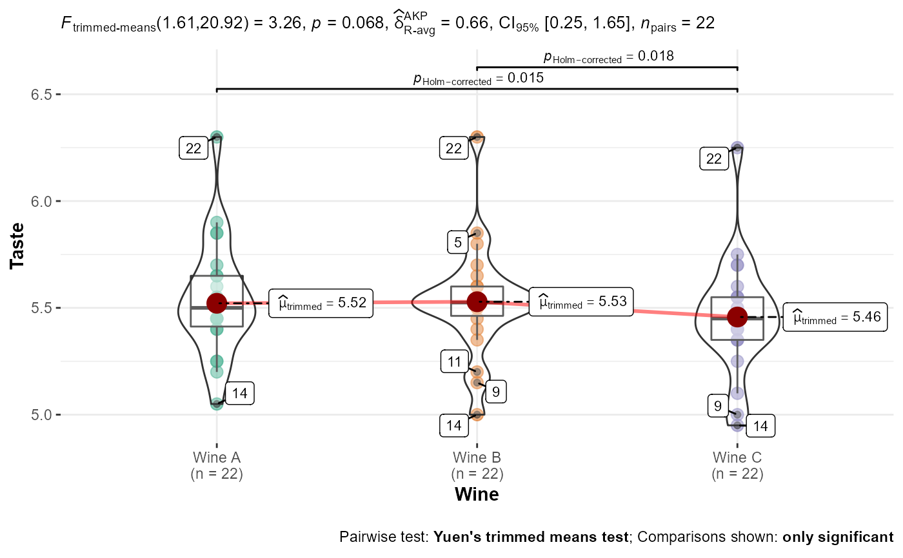

Box/Violin plots for group or condition comparisons in within-subjects (or repeated measures) designs.
Source:R/ggwithinstats.R
ggwithinstats.RdA combination of box and violin plots along with raw (unjittered) data points for within-subjects designs with statistical details included in the plot as a subtitle.
ggwithinstats(data, x, y, type = "parametric", pairwise.comparisons = FALSE, pairwise.annotation = "asterisk", pairwise.display = "significant", p.adjust.method = "holm", effsize.type = "unbiased", partial = TRUE, effsize.noncentral = TRUE, bf.prior = 0.707, bf.message = TRUE, sphericity.correction = TRUE, results.subtitle = TRUE, xlab = NULL, ylab = NULL, caption = NULL, title = NULL, subtitle = NULL, sample.size.label = TRUE, k = 2, conf.level = 0.95, nboot = 100, tr = 0.1, path.point = TRUE, path.mean = TRUE, sort = "none", sort.fun = mean, axes.range.restrict = FALSE, mean.label.size = 3, mean.label.fontface = "bold", mean.label.color = "black", notch = FALSE, notchwidth = 0.5, linetype = "solid", outlier.tagging = FALSE, outlier.shape = 19, outlier.label = NULL, outlier.label.color = "black", outlier.color = "black", outlier.coef = 1.5, mean.plotting = TRUE, mean.ci = FALSE, mean.size = 5, mean.color = "darkred", ggtheme = ggplot2::theme_bw(), ggstatsplot.layer = TRUE, package = "RColorBrewer", palette = "Dark2", direction = 1, ggplot.component = NULL, return = "plot", messages = TRUE)
Arguments
| data | A dataframe (or a tibble) from which variables specified are to be taken. A matrix or tables will not be accepted. |
|---|---|
| x | The grouping variable from the dataframe |
| y | The response (a.k.a. outcome or dependent) variable from the
dataframe |
| type | Type of statistic expected ( |
| pairwise.comparisons | Logical that decides whether pairwise comparisons
are to be displayed. Only significant comparisons will be shown by
default. (default: |
| pairwise.annotation | Character that decides the annotations to use for
pairwise comparisons. Either |
| pairwise.display | Decides which pairwise comparisons to display.
Available options are |
| p.adjust.method | Adjustment method for p-values for multiple
comparisons. Possible methods are: |
| effsize.type | Type of effect size needed for parametric tests. The
argument can be |
| partial | Logical that decides if partial eta-squared or omega-squared
are returned (Default: |
| effsize.noncentral | Logical indicating whether to use non-central
t-distributions for computing the confidence interval for Cohen's d
or Hedge's g (Default: |
| bf.prior | A number between |
| bf.message | Logical that decides whether to display Bayes Factor in
favor of the null hypothesis. This argument is relevant only for
parametric test (Default: |
| sphericity.correction | Logical that decides whether to apply correction
to account for violation of sphericity in a repeated measures design ANOVA
(Default: |
| results.subtitle | Decides whether the results of statistical tests are
to be displayed as a subtitle (Default: |
| xlab | Labels for |
| ylab | Labels for |
| caption | The text for the plot caption. |
| title | The text for the plot title. |
| subtitle | The text for the plot subtitle. Will work only if
|
| sample.size.label | Logical that decides whether sample size information
should be displayed for each level of the grouping variable |
| k | Number of digits after decimal point (should be an integer)
(Default: |
| conf.level | Scalar between 0 and 1. If unspecified, the defaults return
|
| nboot | Number of bootstrap samples for computing confidence interval
for the effect size (Default: |
| tr | Trim level for the mean when carrying out |
| path.point, path.mean | Logical that decides whether individual data
points and means, respectively, should be connected using |
| sort | If |
| sort.fun | The function used to sort (default: |
| axes.range.restrict | Logical that decides whether to restrict the axes
values ranges to |
| mean.label.size | Aesthetics for
the label displaying mean. Defaults: |
| mean.label.fontface | Aesthetics for
the label displaying mean. Defaults: |
| mean.label.color | Aesthetics for
the label displaying mean. Defaults: |
| notch | A logical. If |
| notchwidth | For a notched box plot, width of the notch relative to the
body (default |
| linetype | Character strings ( |
| outlier.tagging | Decides whether outliers should be tagged (Default:
|
| outlier.shape | Hiding the outliers can be achieved by setting outlier.shape = NA. Importantly, this does not remove the outliers, it only hides them, so the range calculated for the y-axis will be the same with outliers shown and outliers hidden. |
| outlier.label | Label to put on the outliers that have been tagged. |
| outlier.label.color | Color for the label to to put on the outliers that
have been tagged (Default: |
| outlier.color | Default aesthetics for outliers (Default: |
| outlier.coef | Coefficient for outlier detection using Tukey's method.
With Tukey's method, outliers are below (1st Quartile) or above (3rd
Quartile) |
| mean.plotting | Logical that decides whether mean is to be highlighted
and its value to be displayed (Default: |
| mean.ci | Logical that decides whether 95
is to be displayed (Default: |
| mean.size | Point size for the data point corresponding to mean
(Default: |
| mean.color | Color for the data point corresponding to mean (Default:
|
| ggtheme | A function, |
| ggstatsplot.layer | Logical that decides whether |
| package | Name of package from which the palette is desired as string or symbol. |
| palette | If a character string (e.g., |
| direction | Either |
| ggplot.component | A |
| return | Character that describes what is to be returned: can be
|
| messages | Decides whether messages references, notes, and warnings are
to be displayed (Default: |
Details
For more about how the effect size measures (for nonparametric tests) and
their confidence intervals are computed, see ?rcompanion::wilcoxonPairedR.
For independent measures designs, use ggbetweenstats.
See also
Examples
# setup set.seed(123) library(ggstatsplot) # two groups (t-test) ggstatsplot::ggwithinstats( data = VR_dilemma, x = modality, y = score, xlab = "Presentation modality", ylab = "Proportion of utilitarian decisions" )#> Note: Shapiro-Wilk Normality Test for Proportion of utilitarian decisions : p-value = < 0.001#>#> Note: Bartlett's test for homogeneity of variances for factor Presentation modality: p-value = < 0.001#>#> #>#> #> #>ggstatsplot::ggwithinstats( data = tibble::as_tibble(WineTasting), x = Wine, y = Taste, type = "np", conf.level = 0.99, pairwise.comparisons = TRUE, outlier.tagging = TRUE, outlier.label = Taster )#> Note: 99% CI for effect size estimate was computed with 100 bootstrap samples. #>#>#> # A tibble: 3 x 6 #> group1 group2 statistic p.value significance p.value.label #> <chr> <chr> <dbl> <dbl> <chr> <chr> #> 1 Wine A Wine B 1.05 0.301 ns p = 0.301 #> 2 Wine A Wine C 3.66 0.00207 ** p = 0.002 #> 3 Wine B Wine C 2.62 0.0246 * p = 0.025 #> Note: Shapiro-Wilk Normality Test for Taste : p-value = 0.002#>#> Note: Bartlett's test for homogeneity of variances for factor Wine: p-value = 0.970#>